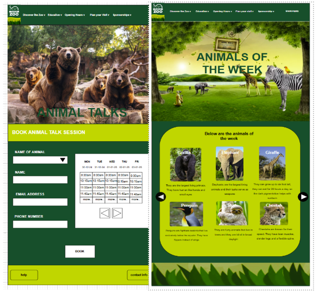
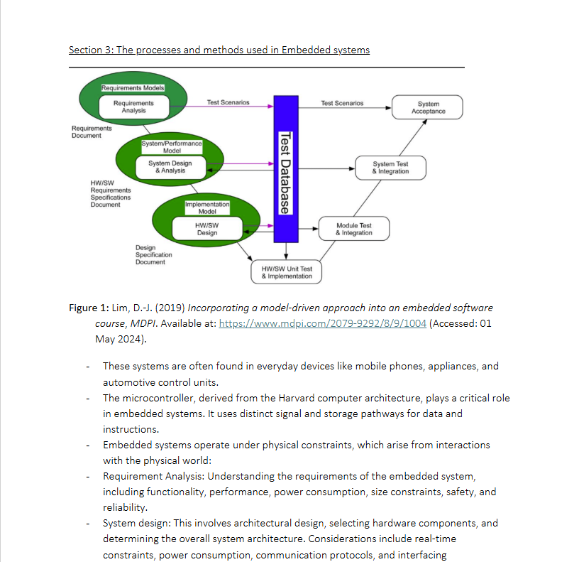
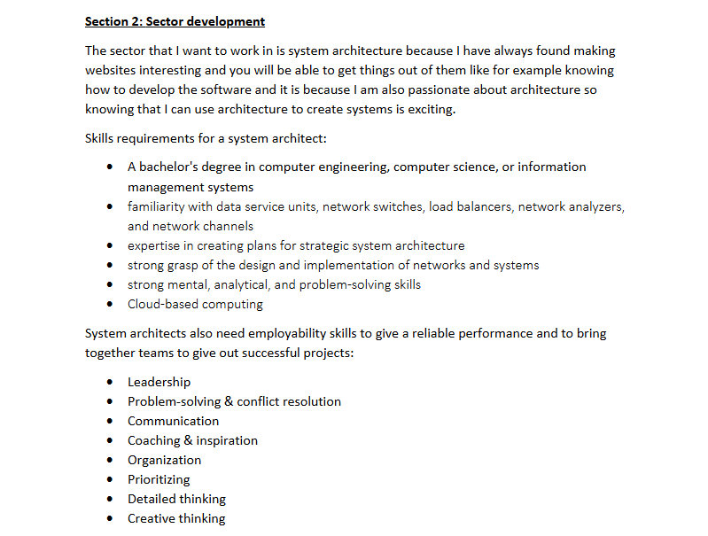
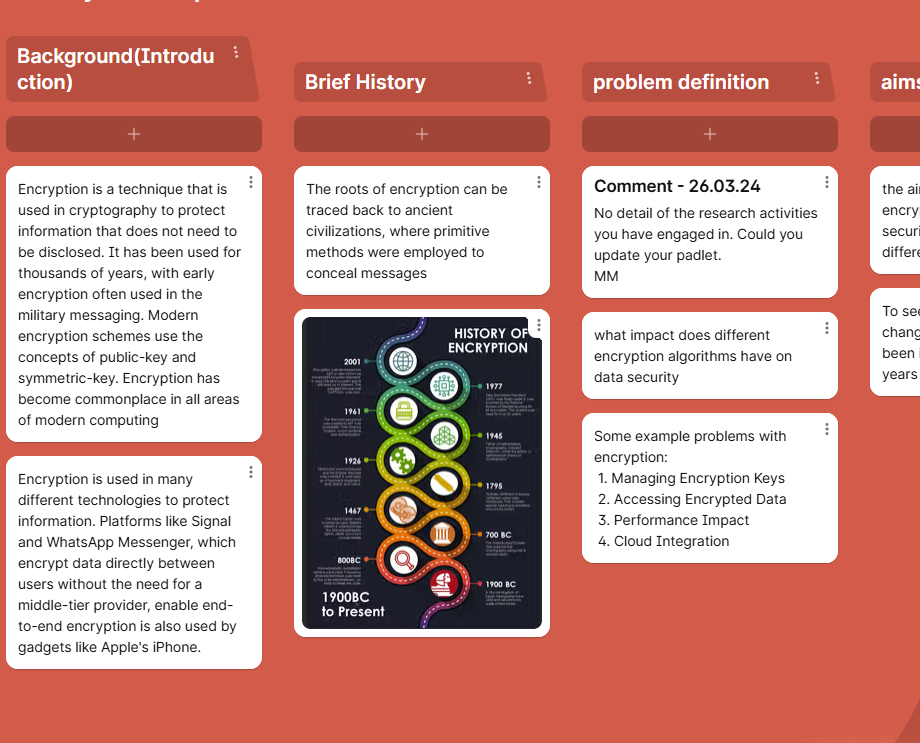

Hello, my name is Anthonette Owusu-Boachie and currently a Student at University of Northampton studying Computer Science and welcome to my online portfolio. In this online portfolio it will display the work that I have done during my time currently at the university and some that I have done during semester 2.

This is project was about Claybrook Zoo and what we had to do for the project was to create an updated version of their website so what we think the website will look like in our eyes and the image above shows one of the wireframes for one of the pages for the website.

This is project was about Encryption and what it was mostly focusing on was how Encryption changes everyday use and to see what the adv and disadvantages are and how it can be improved and used in the future.

This project is similar to the project about Encryption but this mostly focuses on the issues with encryption and different sub-topics that go with encryption like for example hashing and symmetric amd asymmetric encryption

This project was investigating the subject that I currently study which is Computer Science so this project was about the history behind computer science and how it can into play and why the way it is in the 21st century.
Over this past semester, I studied the module "Web Development". The module manly focused on creating and maintaining websites and web applications and covers the functional and technical side of it. It consisted of doing small activities and creating websites and games.
Firstly, I wasnt really feeling good about this module as a whole because I personally find it as my weak point I find it very difficult when it comes to creating games and websites and so on. However,by doing the assignments for the module. I feel like I have developed quite a few things and also understand things a lot more now when it comes to Web Development. I persoally feel like I had a good and bad experience.
For this module I had to create an online portfolio using HTML and CSS and to also make it responsive. The development of this website was really difficult because of the technical and the design of the UI so the technical side of building a website is like how you will structure your website so like for the website I used HTML so it is like the backbone of the website and also structuring the website with CSS which controls how the website will look like and to make it user friendly so by using all of this it builds the front end of the website and more. For the design of the website I decided to keep it simple because i feel like doing too much will distract the person for actually from the actual purpose of the website and for the color theme I went for a blue theme so I used different shades of blue to keep simple and not too much because for I started to create and I did a little bit of research on youtube and then I got my idea from there and also I made it easy to navigate.
Overall, I think this assignment really challenged me at first it was difficult but I think it went well. I realized that this was really not hard you just had to understand the content that you are looking at and the technical things that come with it like understanding HTML and the User Interface behind it like making it interactive but overall Web Development has been a fun module to learn and do.